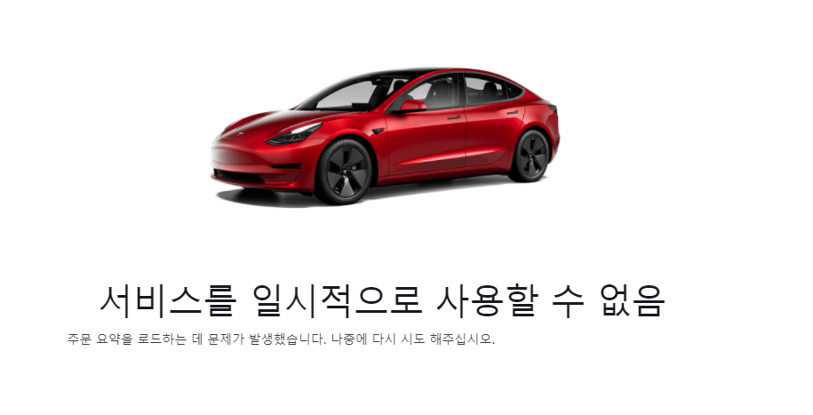

테슬라가 2012년 출시한 대형 세단[2], 전기 패스트백이다.[a]
인류 역사상 양산된 모든 자동차 중에서 정지상태에서 60 mi/h에 그리고 1/4 mi에 가장 빨리 도달할 수 있는 자동차이며,[4] 친환경 자동차 중 가장 긴 항속거리(663 km, 2020년 롱레인지)로 처음으로 항속거리 400마일[5]을 넘어선 친환경 자동차의 기록을 가지게 되었다.[6]
2015년 이후 미국 대형 세단 세그먼트에서, 2017년 이후 유럽 대형차 시장에서 판매량에서 1위의 자리를 차지하고 있으며 이로 인하여 기존 자동차 회사들의 전기차 개발 붐을 이끌어 낸 자동차이다.[b]
2013년 세계 올해의 차 친환경 차 부문에 선정되었으며, 2019년 미국 자동차 잡지 모터트렌드는, 자동차 업계에서 가장 권위를 인정 받아온 상중에 하나인 "연간 최고의 자동차" 70대 중에서, 잡지역사 70년간(1949년 ~ 2019년 사이) 최고의 자동차로 2013년 모델 S를 선정하였다.
[8] 2020년 미국의 최장수 비즈니스 잡지인 포춘이 선정한 "현시대 100개의 위대한 디자인"에 아이폰, 구글검색엔진, 넷플릭스, 레고, 보잉 747 등과 더불어 18번째로 모델 S가 선정되었다.[9]
